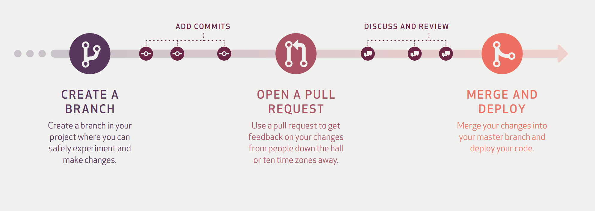

Version control using Git and GitHub: the basics
Git is a distributed version control system. With Git, every developer has the full history of the code repo locally. Github is an Internet host for git repos. Similar hosts include Gitlab, Bitbucket, Gitbucket; and there are many more.
As we transition to fully open-source programming, with the source mainly consisting of text files, git and github becomes critically important.
We suggest that all the source files should be tracked using git and collaborated via github.
Before publication, a git repo can be set as private.
Manage local repo
- Initiate
cd /somedir # navigate to the directory that you want to create the repo
git init # Initiate the git repoThis creates a new subdirectory named .git that contains all of your necessary repository files — a Git repository skeleton.
- Starting tracking files or Staging modified files
git add somefile # start tracking some files
# or
git add --all # start tracking all files in the directory- Commit
git commit -m "Initial commit" # commit the changes with a message
# or
git commit -a -m "Initial commit" # auto commit skipping the staging area Always include a message when committing. A suggested format is “verb” + “subject”
- Ignore
cat .gitignore
*.err # ignore all the logs on errors
build/ # ignore the build directoryYou can edit the .gitignore file at anytime.
- Status and History
You can check the git status using,
git status # Shows you the current git status
git log # Shows you the git history- Removing files
git rm MakefileThis removes the Makefile from Git but not from the directory.
- Undo
git commit --amend # amend the current change to the previous commit
git restore --staged README.md # unstage a staged file
git restore READE.md # discard changes in working directory. Manage remote repos
- Git clone
git clone https://github.com/JulianTao/chgpu_agave_templateThis will clone the github repo JulianTao/chgpu_agave_template to your local machine.
The local repo will have the same name as the remote, but can be modified later.
- Check remotes
git remoteThis will show which remote servers you have configured.
If you run git remote in side the local repo, you see that a default git name origin is assigned to the remote repo.
Now if you run git remote get-url origin, you will see the url associated with this remote repo.
Alternatively, run git remote -v, you see the urls for fetching and pushing actions.
- Add remote repos
git remote add <shortname> <url>This will add a new remote explicitly with the specified shortname and url. The shortname can be used latter in lieu of the whole URL, for example git fetch shortname. This is useful when collaborating.
If you need to change the url of a remote, you can use,
git remote set-url <url>- Fetching and Pulling from the remotes
git fetch <remote>This command will pulls down all the data from the remote project that you don’t have yet. You can then merge in any branches from that remote.
Alternatively, if your current branch is set up to track a remote branch, you can use git pull to automatically fetch and then merge that remote branch into your current branch.
- Pushing from local branch to remotes
git push <remote> <branch> With this command, you can share your local branch by pushing it to the remote. You need to specify the remote and branch that you want to push to. You also need to have the write access to the remote.
- Renaming and Removing remotes
git remote rename <oldname> <newname> # rename a remote from <oldname> to <newname>git remote remove <shortname> # remote the remote <shorname>Collaborate using Github
There are many git workflows. An example is the Github Workflow.

Another popular one is the git-flow

Yet another valuable reference is this comparison Git-workflow vs feature branching
Configure your local git to simplify the workflow
git clone https://github.com/username/repo.git
Username: your_username
Password: your_tokengit config --global credential.helper storegit config --global branch.autosetuprebase always